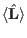

Next: External module function dL1 Up: Module Functions for Observables Previous: External module function dm1 Contents Index
In order to calculate the angular momentum  the following function has to be present in the module file *.so:
extern "C" void Lcalc(Vector & L,double * T, Vector & Hxc, Vector & Hext,
double * gJ, Vector & MODPAR,
char ** sipffilename, ComplexMatrix & Icalc_parstorage);
it works exactly as mcalc, therefore we do not give more details here.